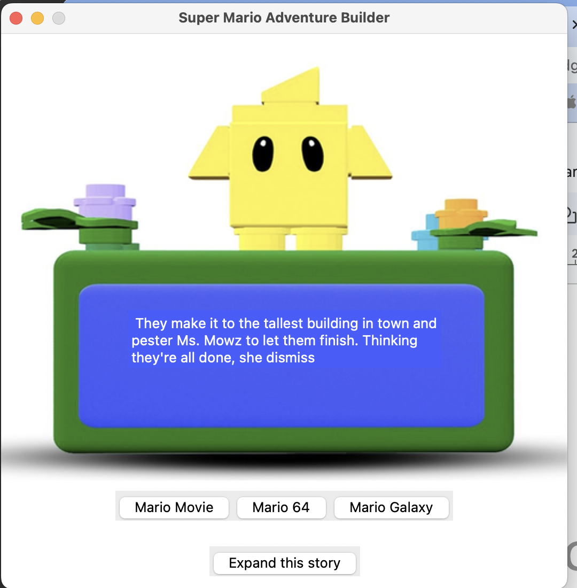
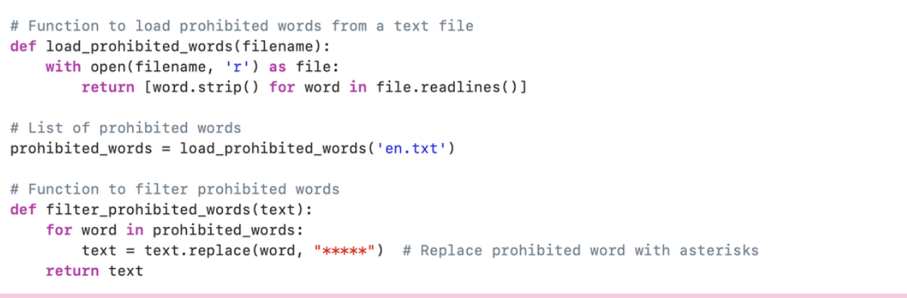

Drawing inspiration from the natural storytelling that accompanies Lego play, the project sought to enhance this experience by introducing a playmate capable of generating stories that evolve with the play session and depending on which character the child was playing with. The concept was initially realized through a Python and Tkinter-based application, which served as a digital sandbox for testing and refining the story-generating capabilities, and later was developed in a physical prototype. The inspiration for the physical embodiment of the play partner came from a desire to enter the physical space of Lego constructions. By 3D printing a custom-designed companion, complete with an e-ink display for story narration and Arduino-powered interaction, the project bridges the gap between digital innovation and physical play.
Iterative Design
To start this project I wanted to see how it worked in a digital form before developing it in the physical.


After modelling in blender what the physical toy would look like I used the model as a base for the digital project and updated the look of it.

I added a prohibited word checker that checked a text file full of prohibited expressions (swear words, bad expressions, innuendos)